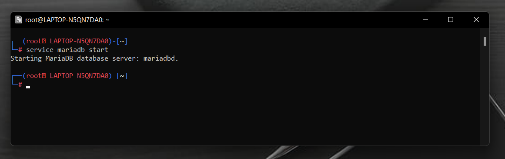
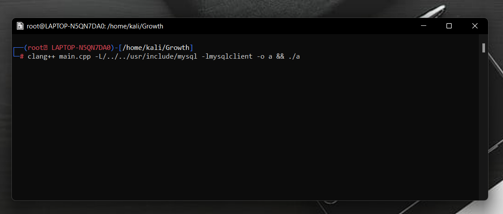
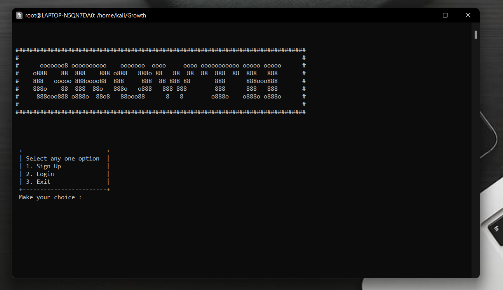
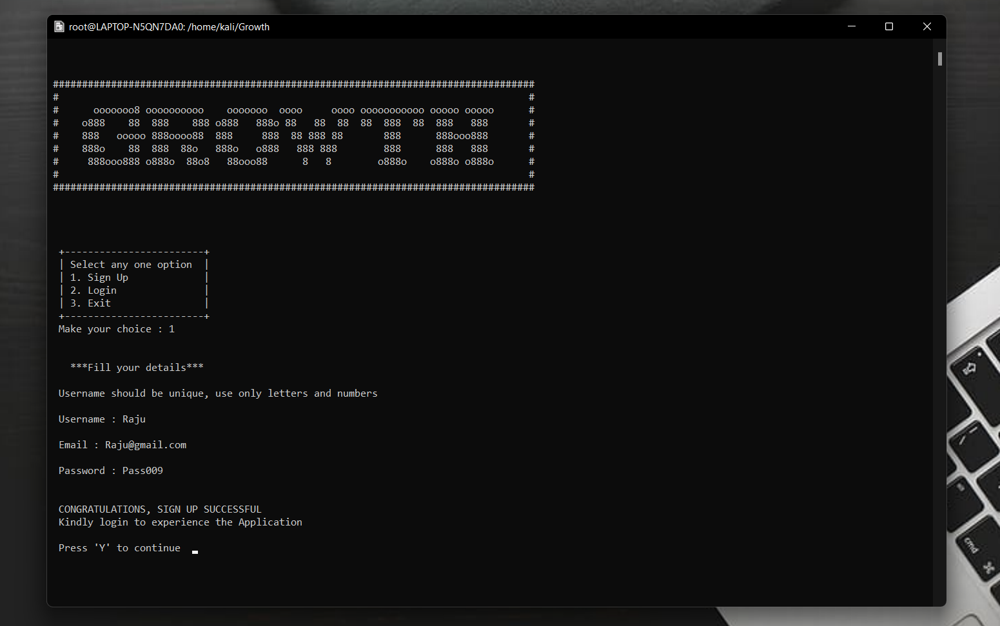
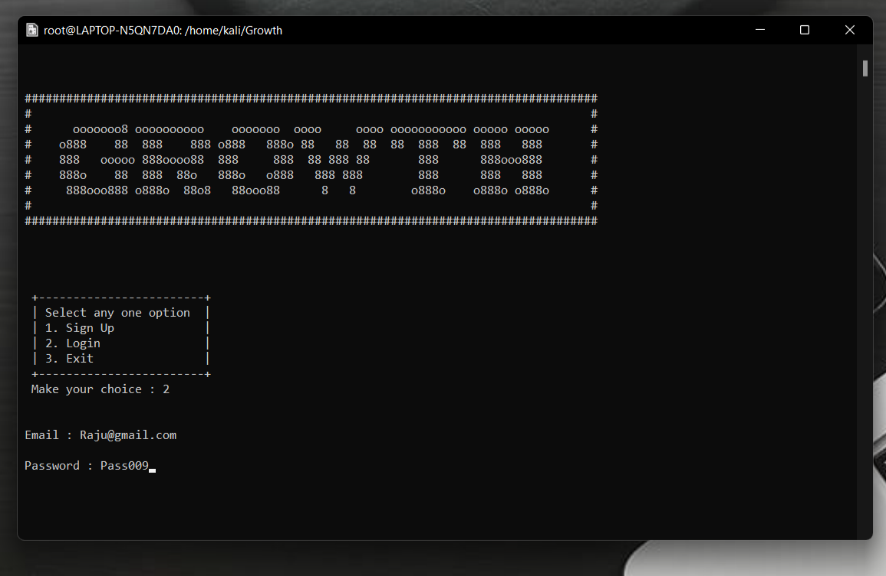
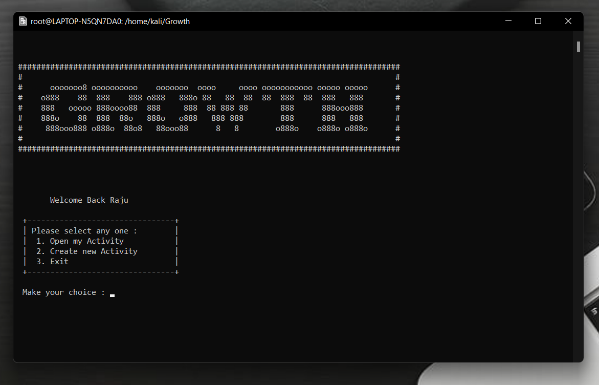
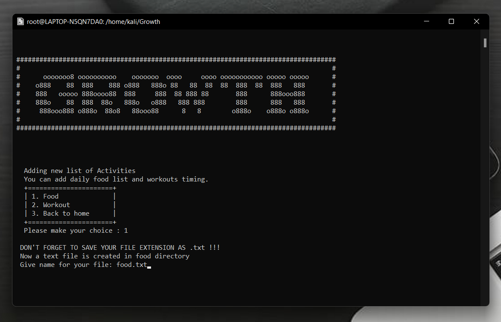
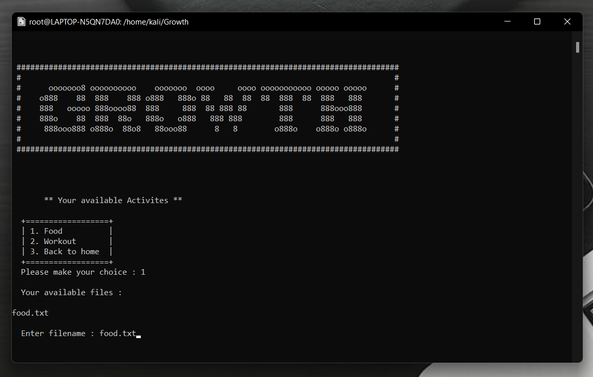

STARTING MARIADB MYSQL SERVER
Using service mariadb start command database server is started
RUNNING THE APPLICATION
Here you have to link the library "mysql" so check the respective path in /usr/include/ directory of your system
clang++ main.cpp -L/../../usr/include/mariadb/mysql -lmysqlclient -o a && ./a
After running the application this is the first look.
ACCESSING THE APPLICATION
After running the application initially it shows login and signup options to continue the process. If the user is new he/she can go with sign up option.
Signup
Login
After succesful login welcome back message is prompted
Now you can create a your files.
Select 2 for creation. After selecting you will be asked to select in which category you want to create your file and you have to give the file name.
In order to open your files
Select 1 to open your Existing files then select category your existing files will be prompted
Closing is simple, just choose 3rd option on every prompt